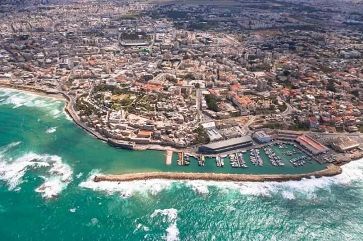

مدينة يافا هي مدينةٌ فلسطينيةٌ تاريخيةٌ تقع على ساحل البحر الأبيض المتوسط،
وهي من أهمّ المدن الفلسطينيّة والتي تبعد عن مدينة القدس حوالي 55 كم من جهة الغرب،
فقد أسّسها الكنعانيون في الألف الرابع قبل الميلاد،
وقام الاحتلال الإسرائيليّ بالاستيلاء عليها وطرد سكانها في نكبة عام 1948م،
وتبلغ المساحة الكلية لمدينة يافا حوالي 6.4 كم².
حافظ اسم يافا على مدلوله مع مرور الزمن فهو اسمٌ كنعانيٌّ يعني الجميل أو المنظر الجميل،
ومعظم تسميات المدينة عبر العصور حملت نفس المعنى وهو معنى الجمال،
وذكر بعض المؤرخون أنّ المدينة قد سُميت على اسم (يافت) وهو أحد أبناء نوح الذي بنى المدينة بعد انتهاء الطوفان،
أمّا أقدم تسجيل لاسم يافا فهو كان باللغة الهيروغليفية والتي تعود لعهد الفرعون تحتمس الثالث.
مـــوقـــع مــديــنــة يـــافـــا
تحتل مدينة يافا موقعاً متميزاً على ساحل البحر الأبيض المتوسط حيث الطبيعة الخلابة والهواء النقيّ،
حيث تقع المدينة بين دائرة عرض 32.3 شمالاً وخطّ طول 34.17 شرقاً،
وكذلك تحتلّ مدينة يافا موقعاً تجاريّاً متميّزاً لوقوعها على مفترق طرق المواصلات بين القارات الثلاث آسيا وأوروبا وأفريقيا,
فهي إحدى البوابات الفلسطينيّة وكذلك يعتبر ميناؤها من أقدم موانيء العالم، والذي يعود تاريخه إلى أكثر من أربعة الآف عام،
ولكن حديثاً في العام 1965م تمّ إغلاق ميناء يافا أمام السفن الكبرى فقد تمّ تحويلها إلى ميناءٍ
آخر ولكنه مازال مفتوحاً أمام السفن الصغيرة،
ويمرّ من أراضيها نهر العوجا حيث تنتشر بساتين الحمضيات والأشجار على جانبيّ النهر
ممّا أضفى على تلك المنطقة موقعا رائعا وفريداً يأتي إليه السكان للاستمتاع بالمناظر الخلابة.
مـــنـــاخ مــديــنــة يـــافـــا
تقع مدينة يافا على ارتفاع 15.16 م فوق مستوى سطح البحر،
وبالتالي فهي تتمتع بمناخ صيفي متوسط الحرارة، حيث تبلغ درجة الحرارة السنوية فيها قرابة 23.25 درجة مئوية,
أما عن الأمطار، فتستقبل مدينة يافا الأمطار في فصل الشتاء بما يقارب 41.81 يوماً ممطراً في السنة.
نـــبـــذة عـــن تــــاريـــخ يـــافـــا
دخلت يافا الحكم العثماني عام 922 للهجرة/1517 للميلاد،
وبعد انتهاء الحرب العالمية الأولى أصبحت تحت الانتداب البريطاني، ثم سقطت في مايو/أيار 1948 في يد العصابات الصهيونية.
وفي عام 1950 ضم الاحتلال مدينة يافا إلى نطاق بلدية تل أبيب لتصبح بلدية موحدة تحت اسم "تل أبيب-يافا"،
وحُولت الممتلكات التي هجرها أصحابها -بما فيها البيوت والمؤسسات والمتاجر- إلى شركات حكومية،
بالتوازي مع الضغط على السكان العرب ومنعهم من أي تغيير على مساكنهم.
خضعت يافا للتهويد بأشكال مختلفة، منها تغيير المعالم والأسماء والآثار العربية والإسلامية،
واستبدالها بمعالم وأسماء عبرية، إضافة إلى تغيير طرازها المعماري من خلال هدم جزء كبير من المباني القديمة والقرى والأحياء المهجرة.
وقد وضُع للسكان العرب منهاج دراسي لا يتطرق إلى تاريخ مدينتهم.
ولِكَوْن يافا ذات موقعٍ استراتيجيٍّ ومهمٍ، حيث تقع على هضبةٍ مرتفعةٍ عن البحر إضافةً لوجودها في مفترق طرق التجارة القديمة،
جعلها ذلك كله عرضةً للغزو والتدمير والتخريب، إذ شهدت يافا العديد من الدول والنزاعات،
فتاريخ يافا القديم زاخرٌ بالكثير، فمثلًا وبحسب مراجع التاريخ اشتهرت يافا مع نهايات القرن 19 ق.م بحادثة النبي يونس -عليه السلام-،
حيث ألقاه الحوت على شاطئها في موقعٍ يسمى "تل يونس".
اشتهرت ببيارات البرتقال وأعطت يافا اسمها لأشهر أنواع البرتقال في العالم،
كما اشتهرت بصناعات النسيج والصابون وسكب وتصنيع المعادن.
ولعبت يافا دوراً بارزاً كمركز حضاري وثقافي وقد صدرت فيها أمهات الصحف الفلسطينية كجريدتي فلسطين والدفاع.

أشـــهـــر المـــعـــالـــم في يـــافـــا
اســم المـــعـــلـــم
مـــعـــلـــومـــات عـــنـــه
صـــورة لـــه
كـــنـــيـــســـة الـــقـــديـــس بـــطـــرس
بنيت كنيسة بطرس في القرن التاسع عشر على الآثار البيزنطية والصليبية،
وهي من المعالم الشهيرة في مدينة يافا، وتقع في الجزء العلوي من المدينة،
وتم الاعتناء بتزيينها من الداخل، الأمر الذي
أضفى طابعاً أوروبياً على بيئة شرقية جميلة.
مـــســـجـــد الـــبـــحـــر
بني مسجد البحر في القرن السابع عشر،
وخدم البحارة المسلمين لقرون عديدة،
حيث يقع على الواجهة البحرية المباشرة في مدينة
يافا القديمة، وهو مكون من أحجار الجير الجميلة.
بـــرج الـــســـاعـــة
يقع برج الساعة في مقابل فندق سيتاي في مدينة يافا،
وقد أقيم هذا البرج في بداية القرن العشرين للاحتفال باليوبيل
الفضي للحاكم العثماني عبد الحميد الثاني،
وتم تنفيذ البرج على الطراز الأوروبي
بالتعاون مع السكان المحليين في مدينة يافا.